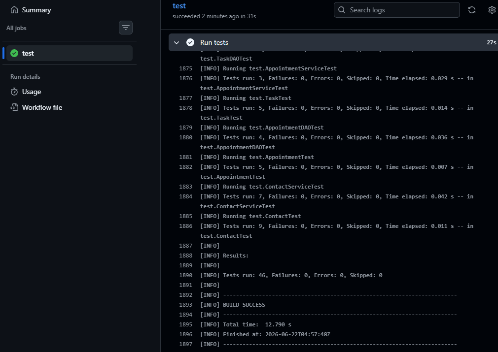

Throughout the Computer Science program, I developed a strong foundation in software engineering, database systems, algorithms, and secure coding practices. This capstone project represents theculmination of those skills through the design and implementation of a Java-based management system using Maven, SQLite, and JUnit testing in a highly modular system.
I strengthened my ability to collaborate by designing modular software components such as DAOs, services, and validation utilities. I had no experience with version control or GitHub Actions, so I was able to advance my skills in this, improving my understanding of CI/CD pipelines and automated testing workflows. With this knowledge, I will be better equipped to discuss this program with the stakeholders that uses standard practices of development.
Outside of the introduction to GitHub Actions and version control, key areas of growth include software engineering design patterns, database integration, and test-driven development. I was able to demonstrate abstraction and separation of concerns, creating more classes to handle appropriate logic to keep in class in line and more maintainable. The application uses a persistent SQLite database, demonstrating real data persistence beyond runtime memory. I also gained exposure to security considerations through dependency management and vulnerability scanning tools integrated into the build process.
This application is a Java-based system that manages appointments, tasks, and contacts using a SQLite database. It includes CRUD functionality, input validation, and automated unit testing.
The following artifacts have a small snippet of old code and enhanced code demonstrating some of the imporvements that were made.
The following are narravtive describing the enhacements performed
All unit tests are executed automatically through GitHub Actions. The project uses JUnit 5 for testing and Maven for build automation. 46 tests were run in total.

Example: 46 unit tests executed successfully with zero failures in CI pipeline.
The project includes dependency management and vulnerability scanning using OWASP Dependency Check to ensure secure third-party library usage.
Watch my Code Review Video taking a look at the original code and my plan for enhancements.
This project demonstrates my ability to design, implement, and test a backend system with proper architecture, validation, and automated CI/CD integration. It reflects my readiness for professional software development roles.